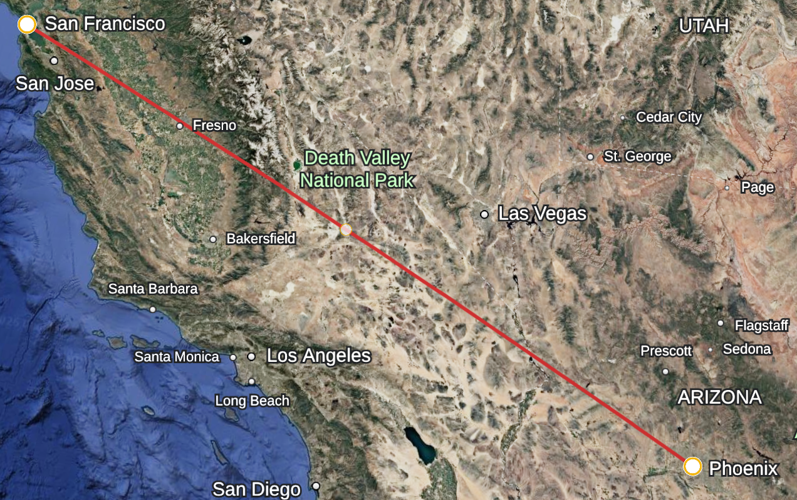

Executive Storyboard
Awaiting results from Latency Lens…
Powered by Gemini 2.5 Flash · Interleaved Multimodal Generation

Awaiting results from Latency Lens…
Powered by Gemini 2.5 Flash · Interleaved Multimodal Generation